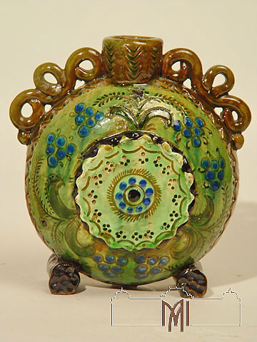
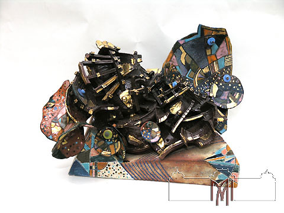

Formarea colecţiei de ceramică a MNAM începe în anii ’50 ai secolului trecut, când Muzeul Naţional de Artă achiziţionează lucrări de Pavel Bespoiasnîi şi Tatiana Canaş, precum şi operele unui şir de ceramişti din generaţia mai veche: Valentina Poleakova, Valentina Neceaeva, Serghei Ciokolov, Ioachim Postolachi. Începând cu a II-a jumătate a sec. XX, arta decorativă profesională devine un fenomen în cultura artistică a republicii.
Elena Rotaru, Maria Saca-Racilă, Silvia Vrînceanu, Carmela Golovinova sînt doar cîteva din artistele care au dus faima covorului moldovenesc departe de frontierele republicii noastre. Graţie talentului lor, a spiritului decorativ autentic, a simţului culorii înnăscut, în presa de specialitate internaţională s-a încetăţenit sintagma de "şcoala de tapiserie moldoveneasca".Muzeul are peste 2600 lucrări.
